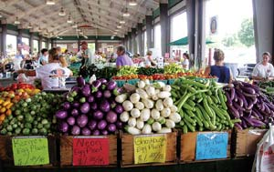

WILLIAM D. ADAMS
Locally grown produce tastes better because it’s fresher, and growers can plant better-tasting varieties if their fruits and vegetables don’t need to stand up to the hazards of long-distance shipping.